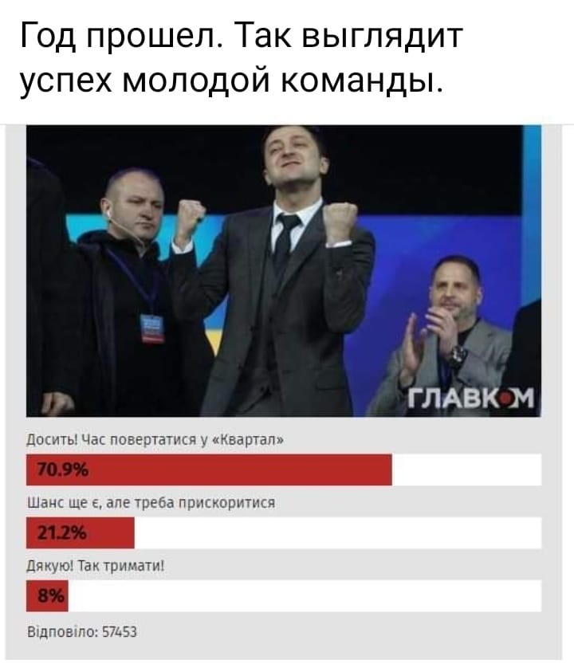

01.05.2020
Голова ТСК по вибухам у Балаклії Давід Арахамія опублікував фальшивий звіт, який заперечує російську диверсію »»»#зекапітуляція
UPD: Підриви арсеналів: розслідування “слуги” – версія Москви »»»
Київського чиновника, який розкрив схеми при закупівлі ШВЛ, звільнили і на нього оперативно завели справу »»»
04.05.2020
Кортежі Зеленського стають усе більшими! Українці шоковані кортежем Зеленського з 40 (!!!) авто »»»
У Вінниці медики протестували через невиплату обіцяних урядом надбавок »»»
...і не тільки у Вінниці!
В Україні тишком-нишком підняли тарифи на електроенергію майже на 50% »»»
05.05.2020
Україна ВПЕРШЕ за 4 роки імпортувала бензин з РФ »»»
Такого кортежу не було навіть у Януковича. 38 машин і повна зупинка руху – Зеленський “найвеличніший” президент »»»
06.05.2020
Поліція прийшла з роз’яснювальною роботою до волонтерки, яка критикувала владу у Facebook »»»
07.05.2020
Здравствуй, Карлсон або Повернення блудного грузинського сина в українську політику
Зеленський призначив Саакашвілі головою Виконавчого комітету реформ »»»
UPD: “Новий Месія”: Саакашвілі заявив, що тільки Зеленський може врятувати Україну »»»
От і ще один дуполиз у команді "найвеличнішого лідера сучасності" з'явився. Вони ідеально підходять один одному, Саакашвілі бігав як віддана собачка перед Ющенком, перед Порошенком, тепер перед клоуном, йому все одно, аби посада була та гроші, а клоун зі своїм комплексом неповноцінності обожнює, коли йому вилизують дупу, але найцікавіше, що дуже скоро і клоун перетвориться на "баригу", от тоді й почнеться справжня вистава... 😟
UPD: Грузія відкликала свого посла з Києва через призначення Саакашвілі »»»
UPD: Кулеба про відкликання посла Грузії: Україні не можуть вказувати, куди призначати Саакашвілі »»»
UPD: Призначення Саакашвілі головою виконкому реформ говорить про зневагу України до міжнародних зобов'язань »»»
Україна відкликала свого посла з Росії через окупацію Криму й війну на Донбасі. Грузія відкликала свого посла з України через призначення Саакашвілі. Відчуваєте співмірність подій?
UPD: Відкликаємо посла, щоб захистити від авантюристів братські відносини з Україною, - прем'єр Грузії Гахарія »»»
Телеканал 1+1 “поширив” фейк Кремля про “секретні лабораторії США” »»»
UPD: Нацрада ТБ відмовилася карати “1+1” за фейк про “секретні біолабораторії США” »»»
А як же вона той 1+1 покарає, Нацрада укомплектована людьми з 95 кварталу й 1+1? 🤑
Зеленський продовжує легітимізовувати бойовиків »»»
08.05.2020
Попри загрозу неврожаю Україна вивозить продовольство шаленими темпами »»»
09.05.2020
Венедіктова «привітала» українців з «9 травня» піснею Лещенка, який виступає за окупацію України »»»
10.05.2020
Храм РПЦ в Україні де молиться голова СБУ Баканов, вшанував російських військових »»»
Посольство Британії каже, що Україна забороняє виїзд громадян, але вже не згадує "дозволи МЗС" »»»
UPD: Команда Зеленського під приводом боротьби з коронавірусом обмежує права українців і будує тоталітаризм »»»
Сивохо повідомив, що його команда поклала квіти в окупованому Донецьку »»»
12.05.2020
Інтерв'ю з вампіром Поклонською. Як Гордон переконує українців, що сепаратизм - це няшно »»»
UPD: Гордон про Поклонську: «Вона сумує за Україною та кається у зраді» »»»
Шта???
13.05.2020
У Зеленського вважають, що він піде на другий термін »»»
І тут збрехав! В усьому БРЕХАВ!
Майже всі гроші з Фонду боротьби з COVID-19 витрачені на Пенсійний фонд »»»
Так он воно звідки узялася вовина тисяча! Замість використання коштів за призначенням їх просто роздали пенсіонерам!
UPD: 14 регіонів виплатили надбавки медикам, Буковині не вистачило грошей – Степанов »»»
Слуги уродов кинули врачей »»»
14.05.2020
Официально от Кабмина: Карантин в Украине НЕ ВВОДИЛСЯ »»»
В ОП вже засумнівалися в доцільності здобуття томосу »»»
Скандал щодо українських ПЛР-тестів набуває нових непозбувно-бентежних граней »»»
Анестезіологи у листі Зеленському розкритикували вітчизняні апарати ШВЛ »»»
Депутат Герус програв у карти 100 тисяч доларів »»»
Авантюризм, дилетантство, хаотичність і нехтування національними інтересами України – Єлісєєв про перший рік дипломатії Зеленського »»»
15.05.2020
За рік президентства Зеленського на держпосадах опинилися понад 30 "кварталівців" та їхніх знайомих »»»
16.05.2020
Більш БРЕХЛИВОГО президента Україна ще не бачила!
17.05.2020
Разумков: Рада не буде визнавати СРСР агресором, бо така позиція народу України »»»
Такого бардака на фронте как при Зеленском не было никогда — офицер ВСУ »»»
UPD: Сухпай ВСУ всего за год вернулся к уровню 2014 »»»
18.05.2020
Суд скасував заочне тримання під вартою міністра доходів часів Януковича »»»
Наступний етапом буде виправдання?
Дмитро Гордон провів інтерв’ю з російським найманцем Гіркіним »»»
UPD: Інтерв'ю Гордона з Гіркіним є терористичною діяльністю »»»
UPD: Гордон заявив, що інтерв'ю з Поклонською та Гіркіним провів за участю українських спецслужб »»»
UPD: Служба безпеки України офіційно заявила про свою непричетність до скандального інтерв’ю Дмитра Гордона зі зрадницею Наталією Поклонською та терористом Ігорем Гіркіним »»»
Усе, що вам треба знати про цього гондона Гордона і про рівень кваліфікації зеленського другана Баканова, який попустив пропустив чергову інформаційну спецоперацію Кремля проти України!
UPD: Інтерв’ю Гордона з Гіркіним: Кому це потрібно і до чого тут СБУ, ГПУ та Гаазький суд »»»
19.05.2020
Голосами "Слуги народу" і "Батьківщини" Рада вбила іномовлення і дала "зелене світло" державному російськомовному каналу "Дом" »»»
Таким нехитрим чином перед виборами влада отримала російськомовний канал в дуже звичному для себе квартальному стилі, і за бюджетні гроші. "Цей канал може закуповувати програмний продукт за бюджетні гроші в приватних виробників, знову таки в того ж Кварталу 95. Натомість донесення української державної позиції англійською, арабською та іншими мовами нинішня влада вважає недоцільним і викидає в смітник"
Малюська відкрив платну камеру у Львівському СІЗО »»»
Замість покращувати умови утримання ув'язнених - заробляти на них гроші - це так не по-барижному!
Нардеп от СН Гео Лерос заявляет, что Генеральный прокурор и глава Офиса Президента Андрей Ермак пытались назначить своих «марионеток» в состав комиссии по выбору главы ГБР »»»
Медіа, які критикують владу - матимуть проблеми від Нацради: Костинський повідомив, що "Прямий", "5 канал" та "Еспресо" можуть опинитись під ударом »»»
20.05.2020
Рік правління Зеленського: найгучніші розслідування про шостого президента»»»

21.05.2020
Зеленський подарував вишиванку неіснуючому "президенту Канади" »»»
22.05.2020
Війна проти малого і середнього бізнесу та загроза державності: Зеленський підписав зміни до Податкового кодексу »»»
25.05.2020
В Україні діє злочинна група, яка продає місця в списках на обмін полоненими »»»
Зеленський продав серіал “Родичі” російського каналу, яким володіє Путін і Кабаєва »»»
От хто може сказати: це вже торгівля на крові, чи ще ні?
Зміни у “справі Шеремета” після пресконференції Зеленського »»»
Ще одне непряме підтвердження того, що правоохоронною системою тепер напряму керують з Банкової #узурпація
26.05.2020
Проти майора ЗСУ, покараного за критику влади, відкрили кримінальне провадження »»»
Зепроданці готуються до ревізії курсу України в НАТО »»» #зекапітуляція
28.05.2020
Правоохоронці підлаштували важливі докази у справі Шеремета »»» #переслідування_волонтерів #кривосуддя
Окуповані території Донбасу потрапляють під децентралізацію »»»
Зелена пліснява готує умови для федералізації України!
Директор Центру Довженка написав заяву про звільнення »»» #знищення_української_культури
29.05.2020
Після подій у Броварах начальника поліції Вінницької області за "грубі недоліки і прорахунки в роботі підрозділів" відсторонили від посади »»»
UPD: ...і відправили на підвищення »»»